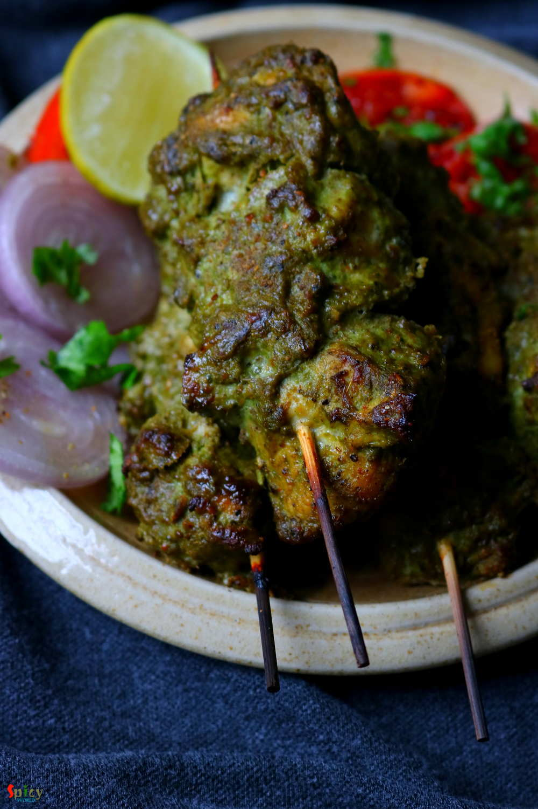
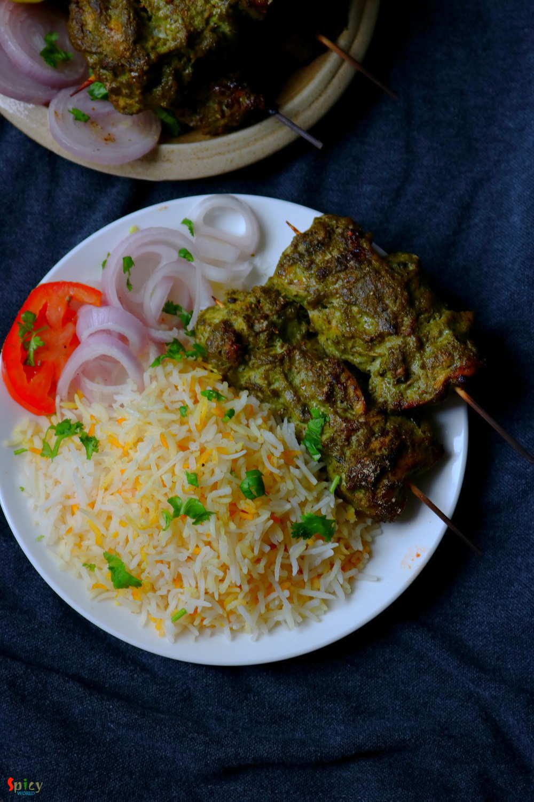

Simple and Easy Recipes
Hariyali Chicken Kabab
© 2016 Spicy World, Published on: Nov 22, 2018
Hariyali Chicken Kabab is a very delicious variety of kabab in which boneless chicken will be marinated in yogurt, ginger, garlic, mint-coriander paste and lot of fresh spices along with few other ingredients. You can definitely use chicken legs instead of boneless. I will recommend you to use chicken thighs instead of breast pieces, as thighs will come out much more juicy. Hariyali means green color. The mint coriander paste will provide a nice green color along with an unique flavor to this dish. I have served Hariyali Chicken Kabab with Butter and Saffron flavored rice and Salads. Enjoy the recipe with video.

Ingredients
- 15-18 boneless chunks of chicken.
- 4 Tablespoons of yogurt.
- Green paste (a handful of mint leaves and coriander leaves, 4 green chilies, 2 inches ginger, 6 big cloves of garlic).
- 3 Tablespoons of mustard oil.
- Spice powder 1 Tablespoon of each (red chili powder, black pepper powder, roasted cumin, coriander powder, kasuri methi powder, garam masala powder, dry roasted besan or gram flour).
- Salt as per your taste.
- Little water.
- 1 charcoal.
- 3 Tablespoons of melted butter.
- 2 Teaspoons of chat masala.
- 2 Tablespoons of lemon juice.


Steps
Make a smooth paste out of mint leaves, coriander leaves, green chilies, ginger, garlic along with little water. Keep the green paste aside.
Now marinate the cleaned chicken pieces add yogurt, 4-5 Tablespoons of that green paste, all of the spice powder, some salt, mustard oil and lemon juice. Mix everything very well and keep them in refrigerator for overnight or at least 5 hours.
Take out the chicken from refrigerator and let it come to room temperature.
Heat a charcoal on open flame, then place a steel bowl or alumunium foil in the bowl. Place the hot charcoal in the bowl or foil and pour 1 Tablespoon of oil over the charcoal. There will be smoke, immediately cover the bowl for 4-5 minutes.
After that remove the charcoal and bowl.
In the mean time soak few bamboo skewers in water for 10 minutes.
Now arrange the chicken pieces in the skewers.
Preheat your oven in highest temperature.
Place the chicken skewers in a oven proof tray.
Bake them in highest temperature for 20 minutes. Then take them out, apply some melted butter all over them, turn them to the other side and bake them for another 15 minutes.
For more charred flavor, broil them for 3-4 minutes on high.
If you are cooking on stove top then heat 2 - 3 Tablespoons of oil in flat pan.
Place 2 - 3 skewers, and cook on medium flame for 15 minutes, turn them to the other side, cook on high flame for another 15 minutes or until the chicken cooks thoroughly.
Sprinkle some chat masala all over them and serve hot.
Your hariyali chicken kabab is ready to serve.
Serve this hot with salad and pulao ...
")